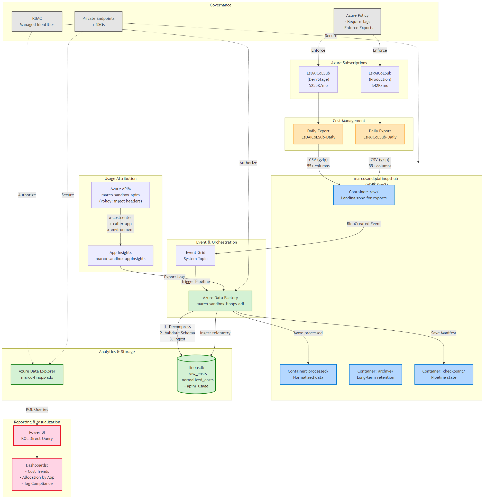
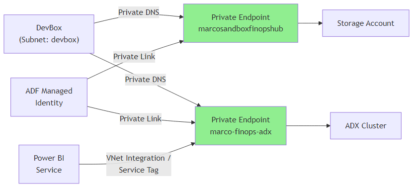
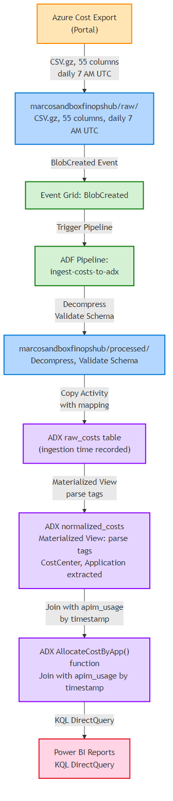

The target architecture implements a centralized FinOps Hubs pattern with cost data ingestion, normalization, usage attribution via APIM telemetry, and Power BI reporting—all following enterprise security best practices (least-privilege RBAC, private networking, audit logging).
mmdc -i 02-target-architecture-figure1.mmd -o 02-target-architecture-figure1.png -w 1920 -H 1200 -b white
The complete end-to-end flow from Azure Cost Management exports through storage, event orchestration, analytics, and reporting layers, with governance controls applied across all components.
mmdc -i 02-target-architecture-figure2.mmd -o 02-target-architecture-figure2.png -w 1600 -H 800 -b white
All data access flows through private endpoints, eliminating public internet exposure. DevBox, ADF managed identity, and Power BI service access resources exclusively via private links.
mmdc -i 02-target-architecture-figure3.mmd -o 02-target-architecture-figure3.png -w 1400 -H 1400 -b white
Complete audit trail from Azure Portal cost exports through normalization, allocation, and visualization, with quality checkpoints at each transformation stage.
Generate daily cost and usage data at resource-level granularity.
| Export | Subscription | Frequency | Format |
|---|---|---|---|
| EsDAICoESub-Daily | d2d4e571-... | Daily 7 AM UTC | CSV (gzip) |
| EsPAICoESub-Daily | 802d84ab-... | Daily 7 AM UTC | CSV (gzip) |
Centralized landing zone with hierarchical namespace for cost data at multiple processing stages.
React to blob creation events and trigger ADF ingestion pipeline.
Orchestrate data movement, transformation, and quality checks.
High-performance analytics engine for cost data with KQL query interface.
marco-finops-adxInject caller identification headers for cost allocation.
x-eva-costcenter - Budget attributionx-eva-caller-app - Application identifierx-eva-environment - Environment tagExecutive dashboards and self-service cost analytics with KQL DirectQuery.
| Identity | Resource | Role | Justification |
|---|---|---|---|
| marco.presta@hrsdc-rhdcc.gc.ca | marcosandboxfinopshub | Storage Blob Data Contributor | Manual operations, troubleshooting |
| mi-finops-adf | marcosandboxfinopshub | Storage Blob Data Contributor | Read exports, write processed/checkpoint |
| mi-finops-adf | marco-finops-adx | Database Ingestor | Write to raw_costs, apim_usage tables |
| mi-finops-powerbi | marco-finops-adx | Database Viewer | Read-only query access for reports |
| Optimization | Savings (Monthly) | Implementation Effort |
|---|---|---|
| ADX Dev SKU (vs. Standard) | $700 CAD | Already planned |
| Storage lifecycle (Cool/Archive tiers) | $15-30 CAD | Phase 1 (low effort) |
| ADF pipeline batching | $10 CAD | Phase 2 (medium) |
| APIM caching | $5 CAD | Phase 3 (low) |
Step 1: Install Mermaid CLI (one-time setup)
npm install -g @mermaid-js/mermaid-cliStep 2: Navigate to the docs/finops folder
cd "i:\eva-foundation\14-az-finops\docs\finops"Step 3: Generate all three PNG images
# Figure 1: High-Level Architecture
mmdc -i 02-target-architecture-figure1.mmd -o 02-target-architecture-figure1.png -w 1920 -H 1200 -b white
# Figure 2: Network Isolation
mmdc -i 02-target-architecture-figure2.mmd -o 02-target-architecture-figure2.png -w 1600 -H 800 -b white
# Figure 3: Data Lineage
mmdc -i 02-target-architecture-figure3.mmd -o 02-target-architecture-figure3.png -w 1400 -H 1400 -b whiteStep 4: Upload to SharePoint
02-target-architecture-sharepoint.html